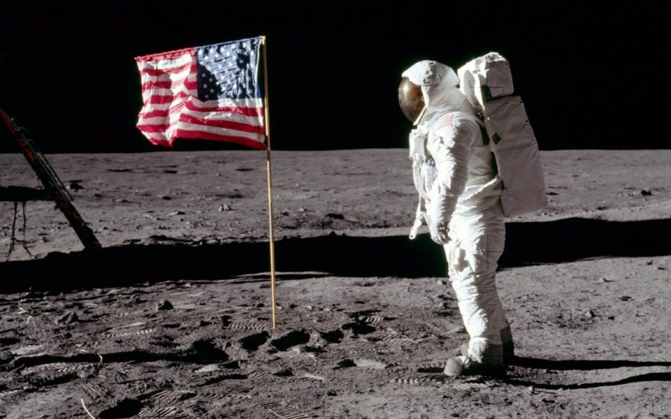
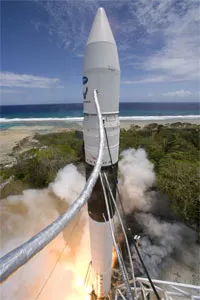
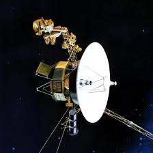
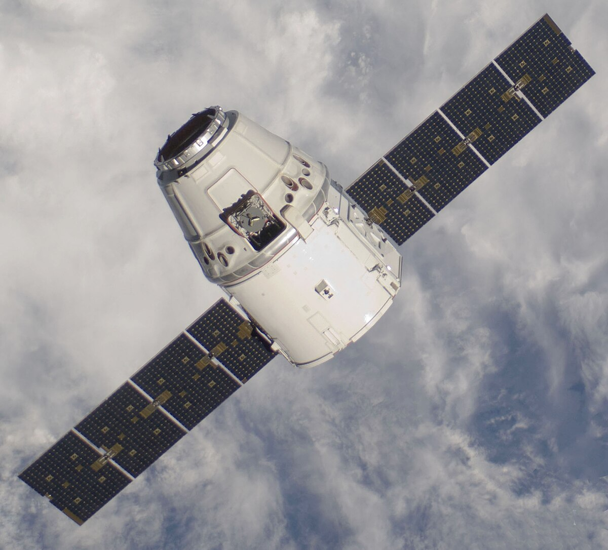
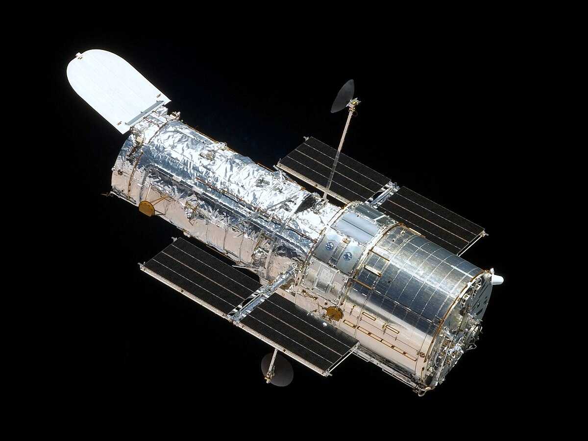
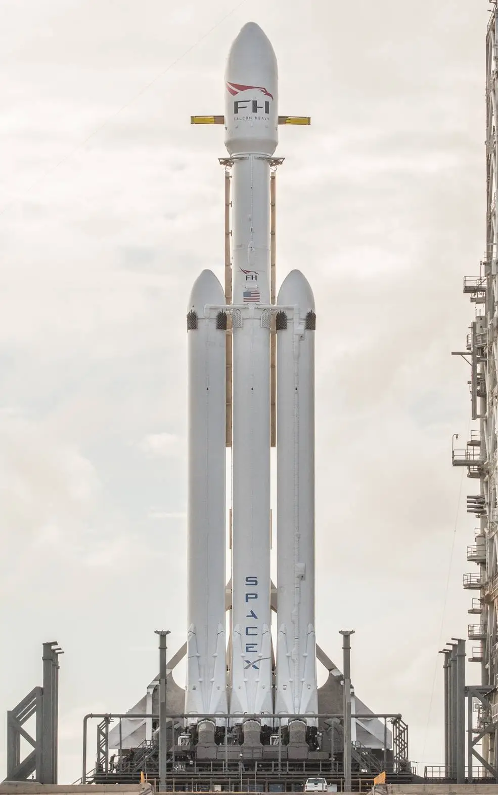
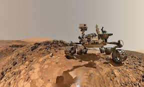
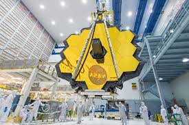
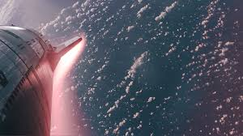

Astral Archive is an online platform where enthusiasts of space exploration can get past, present, and future information on space missions. We also display a live countdown to the next launch so that you can make sure you don’t miss it.
First moon landing in 1969.
Space X made history with Falcon 1 in 2008.
Launched in 1977, Voyager 1 became the first human-made object to enter interstellar space.
launched in 2012, was the first commercial spacecraft to dock with ISS.
Launched in 1990, HST provides images of galaxies, nebulae, and black holes.
Launched in 2018, was the most powerful rocket at the time.
Landed on Mars in 2012, Curiosity is a car-sized rover designed to explore Gale Crater.
In 2020, SpaceX became the first private company to launch astronauts to the ISS.
James Webb Space Telescope, launched in 2021 to observe galaxies.
In 2024, SpaceX conducted it's third flight test of Starship system.
